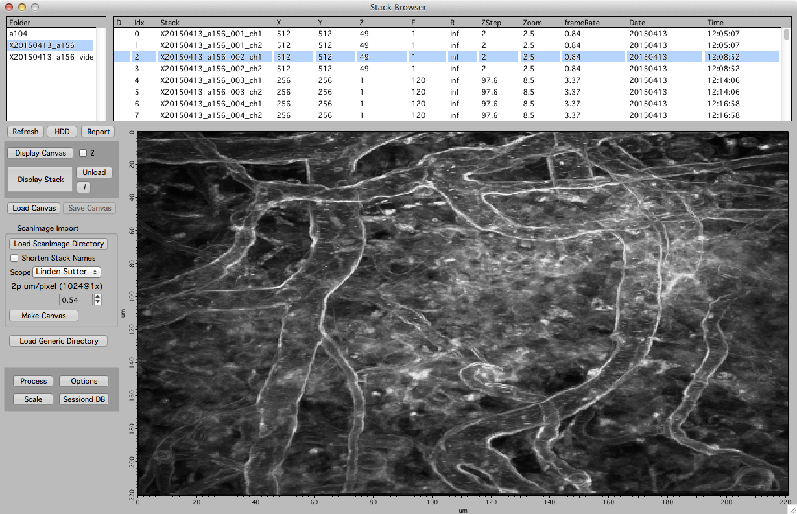

Stack Browser

The stack browser provides an interface to load and browse directories of .tif stacks.
The original documentation is here
The list on the left is a list of loaded folders, each folder has a list of stacks. Select a folder on the left and the list on the right will show the individual stacks within that folder.
Double click on a stack in the list on the right and it will open a stack window to view the actual stack.
Loading stacks
Load ScanImage Directory
Load a folder of ScanImage .tif stack. The name of the folder will appear in the list on the left. Selecting this folder will populate the list of stacks imported. Double click on a stack (in the list on the right) to view the stack.
Important. When importing ScanImage .tif files, the scale is not set by ScanImage. You need to calculate your x/y voxel size (in um per voxel) when you scan at 1x magnification with 1024 by 1024 pixels. You then set this value in '2p um/pixel (1024@1x)'. Map Manager will use this value to calculate each stacks x/y scale for arbitrary ScanImage zoom settings.
Load Generic Directory
Load a folder of .tif stacks ignoring any .tif header information. This has some consequences:
- The stack will not have a scale. You can set the scale in a stack window with keyboard shift+p.
- If the source .tif stack are multi-channel stacks, Map Manager will blindly import them as one big stack (usually with channels interleaved from slice to slice). Please see bAlignBatch for a Fiji plugin to pre-process your .tif stacks into ch1/ch2 file pairs.
- The stacks will not have a date. Thus, map plots with date/days/hours will not be possible.
Drag and drop
The simplest way to load a stack is to drag and drop a .tif file onto the Igor program icon. Stacks opened in this way will appear in a special folder (in the list on the left) called ‘DragAndDrop’.
Tip. The order of stacks can be sorted by selecting columns in the stack list. To sort by date, select 'Date' in the columns header. This ordering is critical when batch importing a list of stacks into a Map Manager map
Browsing loaded data
Select a loaded directory on the left and the loaded stacks will be shown on the right. Double click a stack in the list on the right to open a stack window.
Keyboard shortcuts
The list of stacks will respond to keyboard input
- ‘o’ to generate an output density report. See spine dynamics.
- ‘e’ to edit the list of stacks in a text table
Additional features
There are many things you can do to visualize your stacks
- View a histogram (keyboard ‘h’).
- Set min/max contrast (keyboard ‘c’).
- Generate maximal Z-Projections (keyboard ‘shift+z’).
- Cycle through different window candy (keyboard ‘shift+c’).
- Igor is very good at copying and pasting the image you are viewing in a stack window. Try it out by pasting into Keynote, Powerpoint, or Illustrator.